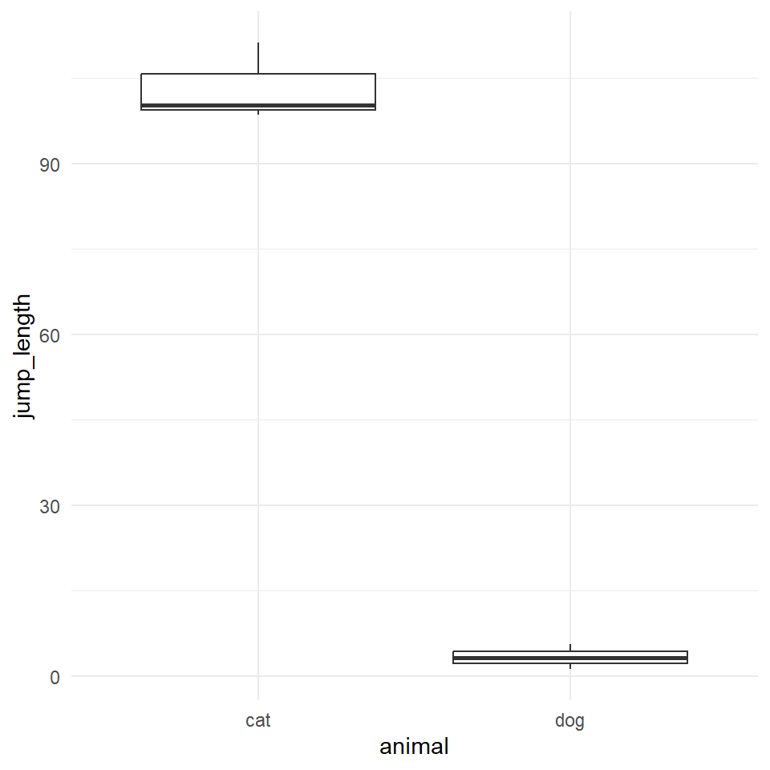

24 Der Wilcoxon-Mann-Whitney-Test
Der Wilcoxon-Mann-Whitney-Test vergleicht die Mediane zweier beliebiger Verteilungen miteinander.
Du findest auf YouTube Grundlagen in R als Video Reihe. Ich werde zwar alles nochmal hier als Text aufschreiben, aber manchmal ist das Sehen und Hören dann einfacher.
Die Entscheidung, ob ein \(y\) normal verteilt ist oder nicht kann an dem Boxplot der Daten abgeschätzt werden.
Wann nutzen wir den Wilcoxon-Mann-Whitney-Test? Wir nutzen den Wilcoxon-Mann-Whitney-Test wenn wir zwei Verteilungen miteinander vergleichen wollen. Das ist jetzt sehr abstrakt. Konrekt, wenn wir zwei Gruppen haben und ein nicht normalverteiltes \(y\). Haben wir ein normalverteiltes \(y\) rechnen wir meist einen t-Test. Wir könnten aber auch einen Wilcoxon-Mann-Whitney-Test rechnen.
Was ist jetzt der Unterschied zwischen einem Wilcoxon-Mann-Whitney-Test und einem t-Test? Der t-Test vergleicht die Mittelwerte zweier Normalverteilungen, also zum Beispiel die Verteilung der Sprungweiten der Hundeflöhe gegen die Verteilung der Sprungweiten der Katzenflöhe. Dazu nutzt der t-Test die Mittelwerte und die Standardabweichung. Beides sind Parameter einer Verteilung und somit ist der t-Test ein parametrischer Test.
Der Wilcoxon-Mann-Whitney-Test ist die nicht-parametrische Variante in dem wir die Zahlen in Ränge umwandeln, also sortieren, und mit den Rängen der Zahlen rechnen. Die deskriptiven Maßzahlen wären dann Median, Quantile und Quartile. Das heißt wir vergleichen mit dem Wilcoxon-Mann-Whitney-Test die Mediane. Wir wollen also wissen, ob sich die Mediane zwischen den Sprungweiten von Hunde- und Katzenflöhen unterscheiden.
Achte darauf nach welcher Teststatistik in der Klausur gefragt wird! Du kannst entweder die \(U\) Statistik berechnen oder aber die transformierte \(z\) Statistik aus der \(U\) Statistik. Je nachdem welche Statistik du nimmst, ändert sich die Richtung der Entscheidung!
Bitte schau dir die Aufgaben in den gesammelten Klausurfragen auf GitHub an um eine Idee zu haben, welche Fragen zum Wilcoxon-Mann-Whitney-Test drankommen.
Wenn kein \(U_{\alpha = 5\%}\) in der Klausur gegeben ist, setzen wir \(U_{\alpha = 5\%} = 12\).
Wenn kein \(z_{\alpha = 5\%}\) in der Klausur gegeben ist, setzen wir \(z_{\alpha = 5\%} = 1.96\).
24.1 Genutzte R Pakete für das Kapitel
Wir wollen folgende R Pakete in diesem Kapitel nutzen.
pacman::p_load(tidyverse, magrittr, broom,
readxl, coin)Am Ende des Kapitels findest du nochmal den gesamten R Code in einem Rutsch zum selber durchführen oder aber kopieren.
24.2 Daten für den Wilcoxon-Mann-Whitney-Test
Für die Veranschaulichung des Wilcoxon-Mann-Whitney-Test nehmen wir ein simples Beispiel. Wir nehmen ein nicht normalverteiltes \(y\) aus den Datensatz flea_dog_cat_fox.csv und einen Faktor mit mehr als zwei Leveln. Wir nehmen hierbei an, dass die Sprunglänge jetzt mal nicht normalverteilt ist. Später sind es Boniturnoten, die definitiv nicht normalverteilt sind. Aber mit der Sprunglänge ist das Beispiel einfacher nachzuvollziehen. Darüber hinaus haben wir so keine Bindungen in den Daten. Bindungen (eng. ties) heißt, dass wir die numerisch gleichen Zahlen in beiden Gruppen haben.
Im Folgenden selektieren mit der Funktion select() die beiden Spalten jump_length als \(y\) und die Spalte animal als \(x\). Danach müssen wir noch die Variable animal in einen Faktor mit der Funktion as_factor() umwandeln. Wir nehmen in diesem Beispiel an, dass die Variable jump_length nicht normalverteilt ist.
data_tbl <- read_excel("data/flea_dog_cat.xlsx") %>%
select(animal, jump_length, grade) %>%
mutate(animal = as_factor(animal))Wir erhalten das Objekt data_tbl mit dem Datensatz in Tabelle 24.1 nochmal dargestellt.
| animal | jump_length | grade |
|---|---|---|
| dog | 5.7 | 8 |
| dog | 8.9 | 8 |
| dog | 11.8 | 6 |
| dog | 8.2 | 8 |
| dog | 5.6 | 7 |
| dog | 9.1 | 7 |
| dog | 7.6 | 9 |
| cat | 3.2 | 7 |
| cat | 2.2 | 5 |
| cat | 5.4 | 7 |
| cat | 4.1 | 6 |
| cat | 4.3 | 6 |
| cat | 7.9 | 6 |
| cat | 6.1 | 5 |
Wir bauen daher mit den beiden Variablen mit dem Objekt data_tbl folgendes Modell für später:
\[ jump\_length \sim animal \]
Bevor wir jetzt das Modell verwenden, müssen wir uns nochmal überlegen, welchen Schluß wir eigentlich über die Nullhypothese machen. Wie immer können wir nur die Nullhypothese ablehnen. Daher überlegen wir uns im Folgenden wie die Nullhypothese in dem Wilcoxon-Mann-Whitney-Test aussieht. Dann bilden wir anhand der Nullhypothese noch die Alternativehypothese.
24.3 Hypothesen für den Wilcoxon-Mann-Whitney-Test
Der Wilcoxon-Mann-Whitney-Test betrachtet die Mediane und Ränge um einen Unterschied nachzuweisen. Daher haben wir die Nullhypothese als Gleichheitshypothese. In unserem Beispiel lautet die Nullhypothese, dass die Mediane der beiden Levels des Faktors animal gleich sind. Wir vergleichen im Wilcoxon-Mann-Whitney-Test nur zwei Gruppen.
\[ \begin{align*} H_0: &\; \widetilde{y}_{cat} = \widetilde{y}_{dog}\\ \end{align*} \]
Die Alternative lautet, dass sich die beiden Gruppen im Median unterscheiden. Wir können uns über die Boxplots oder aber die berechneten Mediane dann den Unterschied bewerten.
\[ \begin{align*} H_A: &\; \widetilde{y}_{cat} \ne \widetilde{y}_{dog}\\ \end{align*} \]
Wir schauen uns jetzt einmal den Wilcoxon-Mann-Whitney-Test theoretisch an bevor wir uns mit der Anwendung des Wilcoxon-Mann-Whitney-Test in R beschäftigen.
24.4 Wilcoxon-Mann-Whitney-Test theoretisch
Der Wilcoxon-Mann-Whitney-Test berechnet die U Teststatistik auf den Rängend der Daten. Es gibt genau soviele Ränge wie es Beobachtungen im Datensatz gibt. Wir haben \(n = 14\) Beobachtungen in unseren Daten zu der Sprungweite in [cm] von den Hunde- und Katzenflöhen. Somit müssen wir auch vierzehn Ränge vergeben.
Die Tabelle 24.2 zeigt das Vorgehen der Rangvergabe. Wir sortieren als erstes das \(y\) aufsteigend. In unserem Fall ist das \(y\) die Sprunglänge. Dann vergeben wir die Ränge jweiles zugehörig zu der Position der Sprunglänge und der Tierart. Abschließend addieren wir die Rangsummmen für cat und dog zu den Rangsummen \(R_{cat}\) und \(R_{dog}\).
| Rank | animal | jump_length | Ränge “cat” | Ränge “dog” |
|---|---|---|---|---|
| 1 | cat | 2.2 | 1 | |
| 2 | cat | 3.2 | 2 | |
| 3 | cat | 4.1 | 3 | |
| 4 | cat | 4.3 | 4 | |
| 5 | cat | 5.4 | 5 | |
| 6 | dog | 5.6 | 6 | |
| 7 | dog | 5.7 | 7 | |
| 8 | cat | 6.1 | 8 | |
| 9 | dog | 7.6 | 9 | |
| 10 | cat | 7.9 | 10 | |
| 11 | dog | 8.2 | 11 | |
| 12 | dog | 8.9 | 12 | |
| 13 | dog | 9.1 | 13 | |
| 14 | dog | 11.8 | 14 | |
| Rangsummen | \(R_{cat} = 33\) | \(R_{dog} = 72\) | ||
| Gruppengröße | 7 | 7 |
Die Formel für die U Statistik sieht ein wenig wild aus, aber wir können eigentlich relativ einfach alle Zahlen einsetzen. Dann musst du dich etwas konzentrieren bei der Rechnung.
\[ U_{calc} = n_1n_2 + \cfrac{n_1(n_1+1)}{2}-R_1 \]
mit
- \(R_1\) der größeren der beiden Rangsummen,
- \(n_1\) die Fallzahl der größeren der beiden Rangsummen
- \(n_2\) die Fallzahl der kleineren der beiden Rangsummen
Wir setzen nun die Zahlen ein. Da wir ein balanciertes Design vorliegen haben sind die Fallzahlen \(n_1 = n_2 = 7\) gleich. Wir müssen nur schauen, dass wir mit \(R_1\) die passende Rangsumme wählen. In unserem Fall ist \(R_1 = R_{dog} = 72\).
\[ U_{calc} = 7 \cdot 7 + \cfrac{7(7+1)}{2}-72 = 5 \]
Der kritische Wert für die U Statistik ist \(U_{\alpha = 5\%} = 8\) für \(n_1 = 7\) und \(n_2 = 7\). Bei der Entscheidung mit der berechneten Teststatistik \(U_{calc}\) gilt, wenn \(U_{calc} \leq U_{\alpha = 5\%}\) wird die Nullhypothese (H\(_0\)) abgelehnt. Da in unserem Fall das \(U_{calc}\) mit \(5\) kleiner ist als das \(U_{\alpha = 5\%} = 8\) können wir die Nullhypothese ablehnen. Wir haben ein signifkianten Unterschied in den Medianen zwischen den beiden Tierarten im Bezug auf die Sprungweite in [cm] von Flöhen.
Bei grosser Stichprobe, wenn \(n_1 + n_2 > 30\) ist, können wir die U Statistik auch standariseren und damit in den z-Wert transformieren.
\[ z_{calc} = \cfrac{U_{calc} - \bar{U}}{s_U} = \cfrac{U_{calc} - \cfrac{n_1 \cdot n_2}{2}}{\sqrt{\cfrac{n_1 \cdot n_2 (n_1 + n_2 +1)}{12}}} \]
mit
- \(\bar{U}\) dem Mittelwert der U-Verteilung ohne Unterschied zwischen den Gruppen
- \(s_U\) Standardfehler des U-Wertes
- \(n_1\) Stichprobengrösse der Gruppe mit der grösseren Rangsumme
- \(n_2\) Stichprobengrösse der Gruppe mit der kleineren Rangsumme
Wir setzen dafür ebenfalls die berechnete U Statistik ein und müssen dann wieder konzentriert rechnen.
\[ z_{calc} = \cfrac{5 - \cfrac{7 \cdot 7}{2}}{\sqrt{\cfrac{7 \cdot 7 (7 + 7 +1)}{12}}} = \cfrac{-19.5}{7.83} = |-2.46| \]
Der kritische Wert für die z-Statistik ist \(z_{\alpha = 5\%} = 1.96\). Bei der Entscheidung mit der berechneten Teststatistik \(z_{calc}\) gilt, wenn \(z_{calc} \geq z_{\alpha = 5\%}\) wird die Nullhypothese (H\(_0\)) abgelehnt. Wir haben eine berechnete z Statistik von \(z_{calc} = 2.46\). Damit ist \(z_{calc}\) größer als \(z_{\alpha = 5\%} = 1.96\) und wir können die Nullhypothese ablehnen. Wir haben einen signifkanten Unterschied zwischen den Medianen der beiden Floharten im Bezug auf die Sprunglänge in [cm].
Bei der Entscheidung mit der berechneten Teststatistik \(U_{calc}\) gilt, wenn \(U_{calc} \leq U_{\alpha = 5\%}\) wird die Nullhypothese (H\(_0\)) abgelehnt.
Bei der Entscheidung mit der berechneten Teststatistik \(z_{calc}\) gilt, wenn \(z_{calc} \geq z_{\alpha = 5\%}\) wird die Nullhypothese (H\(_0\)) abgelehnt.
Achtung – Wir nutzen die Entscheidung mit der Teststatistik nur und ausschließlich in der Klausur. In der praktischen Anwendung hat die Betrachtung der berechneten Teststatistik keine Verwendung mehr.
24.5 Wilcoxon-Mann-Whitney-Test in R
Die Nutzung des Wilcoxon-Mann-Whitney-Test in R ist relativ einfach mit der Funktion wilxoc.test(). Wir müssen zum einen entscheiden, ob Bindungen in den Daten vorliegen. Sollte Bindungen vorliegen, warnt uns R und wir nutzen dann die Funktion wilcox_test() aus dem R Paket coin.
24.5.1 Ohne Bindungen
Ohne Bindungen können wir die Funktion wilxoc.test() nutzen. Die Funktion benötigt das Modell in formula Syntax in der Form jump_length ~ animal. Wir geben noch an, dass wir die 95% Konfidenzintervalle wiedergegeben haben wollen.
wilcox.test(jump_length ~ animal, data = data_tbl,
conf.int = TRUE)
Wilcoxon rank sum exact test
data: jump_length by animal
W = 44, p-value = 0.011072
alternative hypothesis: true location shift is not equal to 0
95 percent confidence interval:
1.0 5.9
sample estimates:
difference in location
3.5 Wir sehen das der Wilcoxon-Mann-Whitney-Test ein signifikantes Ergebnis liefert, da der \(p\)-Wert mit 0.011 kleiner ist als das Signifikanzniveau \(\alpha\) von 5%. Die Nullhypothese kann daher abgelehnt werden. Wir haben einen medianen Unterschied in den Sprungweiten von 3.5 cm [1.0; 5.9] zwischen Hunde- und Katzenflöhen.
24.5.2 Mit Bindungen
Mit Bindungen können wir die Funktion wilxoc_test() aus dem R Paket coin nutzen. Wir nutzen hier als \(y\) die Boniturnoten grade der Hunde und Katzen. Die Funktion benötigt das Modell in formula Syntax in der Form grade ~ animal. Wir geben noch an, dass wir die 95% Konfidenzintervalle wiedergegeben haben wollen. Wenn du die Funktion wilcox.test() nutzen würdest, würde dir R eine Warnung ausgeben: Warning: cannot compute exact p-value with ties. Du wüsstest dann, dass du die Funktion wechseln musst.
wilcox_test(grade ~ animal, data = data_tbl,
conf.int = TRUE)
Asymptotic Wilcoxon-Mann-Whitney Test
data: grade by animal (dog, cat)
Z = 2.49731, p-value = 0.012514
alternative hypothesis: true mu is not equal to 0
95 percent confidence interval:
0.99999999 2.99999999
sample estimates:
difference in location
2 Wir sehen das der Wilcoxon-Mann-Whitney-Test ein signifikantes Ergebnis liefert, da der \(p\)-Wert mit 0.015 kleiner ist als das Signifikanzniveau \(\alpha\) von 5%. Die Nullhypothese kann daher abgelehnt werden. Wir haben einen medianen Unterschied in den Boniturnoten von 2 [0; 3] zwischen Hunde und Katzen.
24.6 Minimale Fallzahl je Gruppe
Häufig wird auch der Wilcoxon-Mann-Whitney-Test eingesetzt, wenn wenig Beobachtungen vorliegen. Es gibt aber eine untere Grenze der Signifikanz. Das heißt unter einer Fallzahl von \(n_1 = 3\) und \(n_2 = 3\) wird ein Wilcoxon-Mann-Whitney-Test nicht mehr signifikant. Egal wie groß der Unterschied ist, ein Wilcoxon-Mann-Whitney-Test wird dann die Nulhypothese nicht ablehnen können. Schauen wir das Datenbeispiel in Tabelle 24.3 einmal an.
| animal | jump_length |
|---|---|
| dog | 1.2 |
| dog | 5.6 |
| dog | 3.2 |
| cat | 100.3 |
| cat | 111.2 |
| cat | 98.5 |
Wir sehen jeweils drei Beobachtunge für Hunde- und Katzensprungweiten. Der Unterschied ist numerisch riesig. Wir können uns den Unterschied nochmal in Abbildung 24.1 visualisieren.

Wir sehen, der Unterschied ist riesig. Der Wilcoxon-Mann-Whitney-Test findet jedoch nur einen p-Wert von 0.1 und kann damit die Nullhypothese nicht ablehnen. Wir haben keinen signifkanten Unterschied.
wilcox.test(jump_length ~ animal, data = small_tbl)
Wilcoxon rank sum exact test
data: jump_length by animal
W = 9, p-value = 0.1
alternative hypothesis: true location shift is not equal to 0Wir sehen hier ein schönes Beispiel für die Begrenztheit von Algorithmen und mathematischen Formeln. Es gibt einen Unterschied, aber der Wilcoxon-Mann-Whitney-Test ist technisch nicht in der Lage einen Unterschied nochzuweisen. Daher solltest du immer versuchen die Ergebnisse eines Testes mit einer Abbildung zu überprüfen.